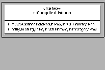
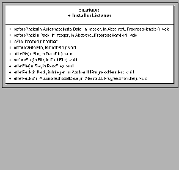
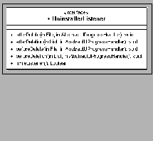

Subsections
Custom Actions
(by Klaus BARTZ)
In general the installation procedure is separated into several
steps. The first step, let's call it the data collection phase,
is getting specific data needed for the installation process.
Typically this is done by typing all neded data into one or more panels,
if a GUI is used, or automatically by reading the data from a config file.
In general nothing will be changed on the system until all needed data is
obtained. But mostly - depending on to the information, e.g. the
destination path - different input panels are involved.
If all needed data is collected the second step will be perfomed,
let us call it the action phase. During this step the state of
the locale machine will be changed, e.g. files will be copied to
the installation destination or some short cuts will be registered.
Each of this subsequent steps are denoted as actions. There are actions
intended to be reused, so called common actions, and actions for one special
purpose only, so called custom actions. In IzPack there are already some
common actions, for example "file transfer", "parse" or "execute".
The third step, the reporting phase, is normally
represented by a panel that reports the result state of the installation
(OK, or not OK) and a simple good bye message.
With IzPack there are two ways to implement custom actions. Firstly
it is always possible to define a custom panel that perfoms the desired
actions too. Secondly, and that's the new, custom actions are supported.
Panels still may be used for actions that are perfomed, e.g.
before files are transferred or after the "execute" action.
But if the needed action depends on the selected or already installed
packages, this works also, but the implementation effort is much higher.
If the action should be performed for several amount of elements of a
pack, using custom actions will be more easy than using panels.
Additional custom actions may be defined for installation, but also for
packaging and uninstallation purposes. If a custom action is also needed
for uninstallation purposes, it'll be always a good idea to implement a
corresponding installation action as custom action, but not as panel.
Custom actions are implemented as listeners. Each listener implements
callback methods that will be called at well-defined points. The method
InstallerListener.afterFile for example will be called after
a file has been copied. There are different interfaces intended for being
used at packaging time, at installation time and at uninstallation time.
Each interface is implemented by a class with the prefix
"Simple" (e.g. SimpleCompilerListener) that implements all declared interface
methods with an empty body. These classes may be used as base classes
for own listener implementations.
To apply custom actions to the installer, an entry in the apropriate
install.xml file is needed. The configuration of listeners starts with
the facultative ELEMENT "listeners" which can contain one or more ELEMENTs
of "listener". For a "listener" there are three attributes which determine the
"compiler", "installer" and "uninstaller" custom action pupose.
Additionally it is possible to make the listener OS dependent using the "os"
ELEMENT.
If file related data will be set, the facultative ELEMENT
"additionaldata" is defined for the ELEMENTs "file", "singlefile"
and "fileset". This data will be automatically moved to the
corresponding PackFile objects in the install.jar. Extraction and
usage should be implemented in a install custom action (see
example).
Custom actions are intended to be used at packaging time, at installation time
and at uninstallation time. The interfaces are:
| Custom action type |
Interface name |
|---|
| Packaging |
com.izforge.izpack.event.CompilerListener |
| Installation |
com.izforge.izpack.event.InstallerListener |
| Uninstallation |
com.izforge.izpack.event.UninstallerListener |

- (constructor) : only the default constructor will
be used. It is called from Compiler just after creating the packager.
Therefore initializing will be better during in the first notify call.
- reviseAdditionalDataMap gives the facility to add
data to each PackFile object. This is the place where
file related data can be transferred from the install xml file
into the install jar file. Although each key and value of the map can be any
type, but the class definitions of all used types must therfore be contained
in the installer jar file or in the VM's classpath. In general strings
are the best choice for being used as keys or values. All keys must be
unique over all registered CompilerListeners. Each call of this
method adds own key value pairs to the given existenDataMap because
more than one listener can be used. If the given map is null, a
new one will be created.
- notify is called at the beginning and at the end of each
"add" method call which is called in Compiler.executeCompiler.

- (constructor) : only the default constructor will
be used. It is called from Unpacker.run before unpacking.
- beforePacks will be called each time before an unpacking
call is performed.
- beforePack is called before a package is
installed. Pack object and the number of the pack are passed.
- isFileListener determines whether the next four
methods are called or not. This is a little performance optimizing.
- beforeDir is called before a directory is created.
In this case, when file listeners exist, directories are created
recursively and the method is called at each step. The file and the
current PackFile object are passed.
- afterDir is called directly after the directory
creation.
- beforeFile is called before a file is created. The file
and PackFile object are passed as parameters.
- afterFile is the best place to perform file
related actions. The given PackFile objects contains
the additional data which was set at packaging.
- afterPack will be just called after the pack is
closed.
- afterPacks is the last step before the handler
will be stopped.

- (constructor) : only the default constructor will
be used. It is called from Destroyer.run as first call.
- beforeDeletion will be called after execute files was performed.
The given list contains all File objects which are marked for deletion.
- isFileListener determines whether the next two
methods are called or not.
- beforeDelete is the method which, is called before
a single file is deleted. The File object is given as
parameter.
- afterDelete will be invoked after the delete call
for a single file.
- afterDeletion is the last call before the
cleanup of created data is performed.
Custom actions must always implement one of the given listener
interfaces. As mentioned above, it is also possible to derive from
one of the "Simple" listeners. The package path is facultative, only the
class name must be unique over all custom actions. The preparation of a
custom action for providing it with an installation is very similar to panels.
Custom actions must also be packed into a jar file with the name
of the custom action class name. This jar file should be placed in
[IzPackRoot]/bin/customActions, may be
[IzPackRoot]/bin/customActions/MyCompilerListener.jar
[IzPackRoot]/bin/customActions/MyInstallerListener.jar
[IzPackRoot]/bin/customActions/MyUninstallerListener.jar
In the default Ant definition file (build.xml) there are some
targets for this stuff.
If a custom action uses JNI at installation time, often the
associated uninstall custom action needs JNI too. For this
situation it is possible to declare a native library for
unstallation. The only work to do is to add a stage
attribute to the native tag in the install xml file like
<!-- The native section. We specify here our os dependant
libs..--> <native type="3rdparty"
name="MyOSHelper.dll"stage="both" >
<os family="windows" />
</native>
The needed additional classes are packed into
lib/uninstaller-ext.jar. If a native library is defined for
uninstallation, this file will also be packed into the
installer.jar as IzPack.unistaller-ext and used at its right
position.
Follow the steps that are needed to create and use custom actions
with the "normal" source environment (not standalone compiler)
using Ant. Of course, it works also with the standalone compiler.
Custom Actions at Packaging (CompilerListener)
- Implement com.izforge.izpack.event.CompilerListener or
extend com.izforge.izpack.event.SimpleCompilerListener.
Place it as [IzPackRoot]/src/lib/[MyPackagePath]/MyCompilerListener.java.
- Add a "compile.simple" antcall in to [IzPackRoot]/src/build.xml.
<antcall target="compile.listener.simple">
<param name="listener" value="MyCompilerListener"/>
<param name="listener-dir" value="MyCompilerListener"/>
<param name="listener-include" value="[MyPackagePath]"/>
</antcall>
- Run [IzPackRoot]/src/build.xml.
- Add a "listeners" ELEMENT with a "listener" ELEMENT with
a "compiler" attribute in to [MyProjectPath]/install.xml
<listeners>
<listener compiler="MyCompilerListener" />
<listeners>
- Compile with
java -jar [IzPackRoot]/lib/compiler.jar -HOME [IzPackRoot]
[MyProjectPath]/install.xml -b [MyProductPath] -o
[MyBuildPath]/install.jar
- Test it
Perform the same steps as described in 7.3.1, replace
all occurrences of "CompilerListener" with "InstallerListener" and
"compiler" with "installer".
Perform the same steps as described in
7.3.1, replace all occurrences of
"CompilerListener" with "UninstallerListener"and "compiler" with
"uninstaller".
Let us say, we want to set access rights for files and directories
on Unix. The Java sources are placed in the directory
[IzPackRoot]/sample/src/com/myCompany/tools/install/listener.
There are the files ChmodCompilerListener.java and
ChmodInstallerListener.java.
- Copy the files too
[IzPackRoot]/src/lib/com/myCompany/tools/install/listener
- In [IzPackRoot]/src/build.xml there are the lines
<!-- CUSTOM ACTION test START
CUSTOM ACTION test END -->
Uncomment them (activate the lines between them).
- Build IzPack new.
- Compile a test installation with
java -jar [IzPackRoot]/lib/compiler.jar -HOME [IzPackRoot]
[IzPackRoot]/sample/listener/install.xml
-b [IzPackRoot]/sample/listener -o
[IzPackRoot]/sample/listener/install.jar
- Install it
java -jar install.jar
In this section the common ant task custom actions are described
in detail. It is only for developers who are not acquainted
with IzPack or it's custom actions. In addition to the
basics there are some recapitulations of the common custom
action techniques and some hints for pitfalls.
In the package com.izforge.izpack.event there are the ant
related custom actions AntActionInstallerListener and
AntActionUninstallerListener. As recapitulation, to add
any custom action a
reference in install.xml will be needed, as example:
<listeners>
<listener installer="AntActionInstallerListener"
uninstaller="AntActionUninstallerListener" />
</listeners>
For all referenced listeners a jar file with the same name must
exist in [IzPackRoot]/bin/customActions. If compilation
(packaging) fails with a "not found" error, first
verify, that the jar file exists. If not, create it.
With this custom action it is possible to perform ant calls at
installation and/or uninstallation time. It is not only a wrapper
for a comand-line ant call, but also an intersected description file
defining what target of the ant build file should be performed at
what time of (un)installation and specifies which properties for what IzPack
pack are to be used. The intersected description file is written as XML,
the corresponding dtd is placed in
src/dtd/event/antaction.dtd. The description file should be declared as a
resource in the install.xml with the id AntActionsSpec.xml e.g.
<resorces>
...
<res id="AntActionsSpec.xml" src="myInstallSpecs/MyAntActionsSpec.xml" />
...
</resorces>
The precise spelling of the id is important. The base path of src
is the installation project path. If you want to use ant, you have to specify it here.
IzPack is designed for running without dependencies on external software or libraries.
Therefore it is necessary to include everything needed, in this case ant self.
The field <jar> in
installation.xml is predestinated for such cases, e.g.
<jar src="jar/ant/ant.jar" stage="both" />
Be aware, that an "extended" ant use needs more than one jar, for
example often xercesImpl.jar. If an obscure "class not
found" exception is raised during testing, check first for missing
jar files.
For supporting uninstallation the jar field was extended by the
attribute stage. If an ant uninstaller custom action is
used, the uninstaller also needs the jar files. If stage
is "both" or "uninstall", the contents of the referenced jar file
will be packed into uninstaller.jar. Be aware that not the jar file
itself, but the contents of it are required. This implies, that the paths of the
contained files are unique and the information in
meta-inf/Manifest.mf will be lost.
An ant action will be defined in the resource with the id
"AntActionsSpec.xml". Sometimes it will help to lock into
[IzPackRoot]/src/dtd/event/antaction.dtd or validate a
written xml file with the dtd.
On this xml file a substitution will be performed using all
defined IzPack variables. It is performed just before
processing the packs. This is a common way of loading spec files
into custom actions. For more information see method
com.izforge.izpack.util.SpecHelper.readSpec.
If you want to substitute some custom item, simply add a variable
via idata.setVariable in a custom panel before InstallPanel.
The given variable name (id) should be written into the xml file
in the common variable notation.
The top level XML section is called <antactions>. Only
one is possible. The <antactions> are segregated in one or more
<pack> elements. The single attribute <name> of
the <pack> corresponds to the same structure in
install.xml (for more information see also installation.dtd). Only the
"things" included in the <pack> are performed, if a
pack with the same name was chosen to be installed. The "things"
to be done to self are defined by the element <antcall> (without
ssss).
The <antcall> takes the following attributes:
- order: required. Determine at what point of installation the antcalls
defined by element target should be
performed. Possible are
beforepack, afterpack, beforepacks or afterpacks. Be aware that
with beforepack(s) there are no installed files and also no installed
build file. With this order only preexistent build files are
useable.
- uninstall_order: optional. Determine at what point of uninstallation
the antcalls defined by element uninstall_target
should be performed. Possible are beforedeletion
and afterdeletion. As opposed to the
behaviour of order the referenced files
are also accessible in the order
afterdeletion. The
uninstaller action copies the files into
tempfiles before deletion which are marked as deleteOnExit.
- quiet: optional. To quit or not. Possible are yes or
no. Default is no.
- verbose: optional. To output verbose information or not. Possible are yes
or no. Default is no.
- logfile: optional. Path of the file for logging should
be performed. The logfile should be not marked for
uninstallation otherwise it will be deleted too.
- buildfile: required. Path of the file which contains the
antcall. This is the file you normally use as -buildfile during an ant call via the command
line. In this file variables are not substituted. For
substitution there are properties in ant which can be used.
Never write an IzPack variable in an ant buildfile.
- messageid: optional. A string ID which refers to
bin/langpacks/installer/<lang>.xml. If it is defined, the message
will be displayed in the InstallPanel whilst performing the ant call.
In addition to the possible attributes there are some elements. All
elements can be defined more than one time in one
<antcall>. All are optional, but with no
<target> element the <antcall> makes no sense.
Do not confuse the following: "required"s are related to the
attributes of the elements, not to the elements themselfs.
<property>: define a property
Property to be used with all targets and
uninstall_targets which are defined for this antcall.
- name: required. The name (id) of the property.
- value: required. The value of the property.
<propertyfile>: define properties in a file
Properties to be used with all targets and uninstall_targets which
are defined for this antcall given by the path of a properties
file.
- path: required. Path of a file which contains
properties in the syntax which is used by ant. Some ant calls
need properties files. For these this element is used. One
way to fill specific data into it is to create a new file in
a custom panel and fill it with values given by input fields.
The file path can be set at installation time, if there is a
variable in AntActionSpec.xml and an IzPack variable was
defined before InstallPanel. That file can be only created
with deleteOnExit, if no <uninstall_target> was defined in
this <antcall>. This implies, that other <antcall>s can
have a <uninstall_target>.
<target>: target to call at installation
Targets to perform with this antcall at installation time. The
targets should be defined in the given buildfile or else an ant
exception will be raised. This is that what you use, if you don't want
to perform the default target. e.g. cleaning the IzPack project with
ant clean
- name: required. The name of the target.
<uninstall_target>: target to call on uninstallation
Targets to perform with this antcall at uninstallation time. The
targets should be defined in the given buildfile otherwise an ant
exception will be raised. With this target it will be possible
to undo the things done at installation time.
- name: required. The name of the uninstall target.
Julien Ponge
2005-04-22